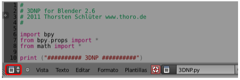
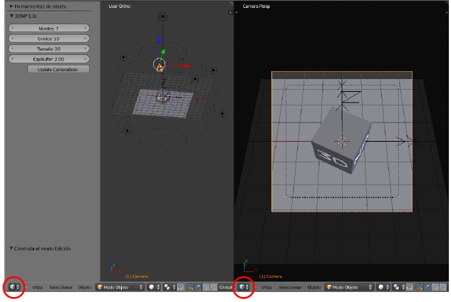
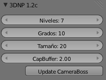
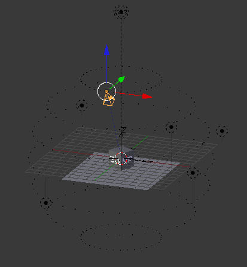

Entorno de trabajo
Ejecutamos el archivo 3DNP Blender.blend que se encuentra dentro de la carpeta Blender.
Vamos a analizar el entorno de trabajo para saber el terreno que pisamos:
- Abajo del todo hay un nuevo Editor de texto
 con un código en el lugar donde habitualmente encontramos el editor con la Línea de tiempo Ese es el script escrito en Python que hace que se genere lo necesario para que funcione 3DNP. Nosotros no vamos a manipularlo.
con un código en el lugar donde habitualmente encontramos el editor con la Línea de tiempo Ese es el script escrito en Python que hace que se genere lo necesario para que funcione 3DNP. Nosotros no vamos a manipularlo.

- Arriba hay dos editores Vista 3D. El de la derecha es para tener un punto de vista desde la cámara y el de la izquierda para tener una vista del artilugio. Por supuesto que podríamos prescindir de uno de ellos, y alternan la vista general con la de la cámara, pero ya que están ahí no le damos mayor importancia y las dejamos estar.

- En el editor Vista 3D de la izquierda el cuadro Herramientas ("T") cuenta con una novedad. El script está ejecutado y hace que se muestren opciones relativas a 3DNP.

- Y en ese editor Vista 3D aparece el artilugio con el que trabajar.
